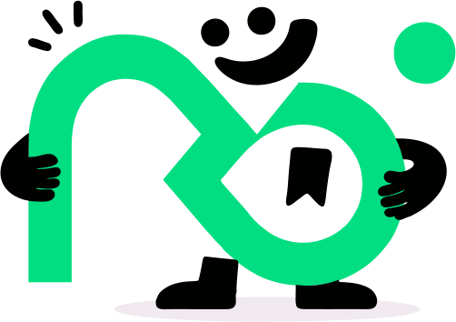
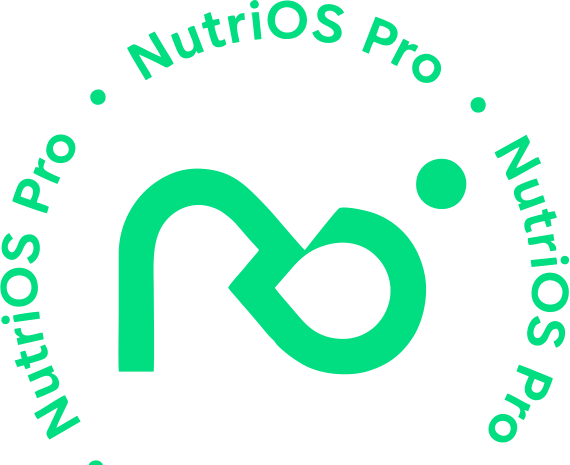

Apresentação institucional · v1 em produção
Apresentação institucional · v1 em produção
Sua prática clínica merece um sistema operacional.
Avaliação, cálculo, dieta e evolução — num fluxo só. Você cuida do paciente; o NutriOS Pro cuida do resto.
Cálculo manual, planilhas dispersas — e o paciente que não volta.
O nutricionista clínico vive duas dores ao mesmo tempo: fricção operacional e abandono do paciente.
A colcha de planilhas
Avaliação antropométrica, cálculo energético e montagem de dieta dependem de múltiplas planilhas de Excel — complexas, sobretudo para o recém-formado.
Foco só em caloria
O maior gap do mercado: o paciente "aprende e não volta". Sem comportamento e sem visualização de resultado, ele abandona a dieta.
Evolução não comprovada
Sem gráficos que mostrem o progresso, o profissional não comprova o resultado — e não consegue fidelizar nem cobrar mais.
O "OS" no nome não é estética — é a tese da marca. Avaliação, cálculo, prescrição e acompanhamento deixam de ser planilhas dispersas e viram um único organismo vivo, contínuo e inteligente, espelhando o próprio ciclo metabólico que o produto ajuda a gerir.
O símbolo "nö", em traço único e contínuo (onda/infinito), é a tradução visual dessa ideia: fluxo, continuidade, ciclo, evolução sem fim.
O Cuidador que usa a magia da tecnologia para que ninguém fique para trás.
Cuidador (primário). Cuida do paciente — módulo comportamental, visualização da evolução, combate à frieza clínica — para que ele não desista. E cuida do profissional, tirando das suas costas a carga operacional e o medo do erro de cálculo.
Mago (secundário). A camada de IA torna visível e mensurável o que antes exigia compasso, planilha e trabalho manual. A metáfora do "sistema operacional" converte o caos da prática em fluxo organizado.
O nutricionista é o herói da história; o NutriOS Pro é o guia. A marca potencializa o profissional — nunca o substitui.

Onde os outros calculam dieta, nós sustentamos a permanência.
O mercado é dominado por WebDiet e Dietbox — consolidados em "montar dieta". O espaço em branco do NutriOS Pro é triplo.
| Eixo | WebDiet / Dietbox | NutriOS Pro |
|---|---|---|
| Foco | Cálculo e prescrição centrados em caloria/macro | Saúde integral + comportamento + adesão — o paciente não desiste |
| Inteligência | Bases e ferramentas estáticas | IA aplicada — foto de prato, exames, Body 3D, rótulos |
| Conceito | Software de nutrição | O sistema operacional da prática clínica — categoria própria |
Para o nutricionista clínico que quer mais que calcular dietas — quer que o paciente permaneça e evolua — o NutriOS Pro é o único sistema operacional de nutrição que une cálculo automatizado, inteligência por IA e mudança comportamental num só fluxo.
Tudo num lugar só — pacientes, avaliações, dietas e evolução.
Quatro sprints entregues, em produção. O fluxo clínico inteiro do nutricionista num único Web App.
Antropometria, fotos e Body 3D
Protocolos de dobras cutâneas e bioimpedância. TMB pela classificação corporal (Harris-Benedict, Mifflin ou Tinsley).
TMB · GET · VET
Hidratação e suplementação. VET = GET + ajuste do objetivo (superávit/déficit), com regras clínicas validadas.
Refeições, macros e templates
Proteína e carboidrato a 4 kcal/g, gordura a 9 kcal/g. Templates reutilizáveis para acelerar a prescrição.
Gráficos temporais
Monitoramento em gráficos (Recharts) que comprovam o progresso — e que o paciente entende na hora.
Base TACO / IBGE
Mais alimentos customizados e importação massiva via CSV. A base que o profissional precisa, do jeito dele.
Relatórios em PDF
Entrega ao paciente do plano completo, com a identidade do profissional. Na versão atual, o paciente recebe por PDF.
A tecnologia trabalha nos bastidores. O resultado aparece na hora.
Não vendemos "IA" — vendemos o que ela faz por você.
Foto de prato
Fotografe a refeição — o consumo é registrado e analisado automaticamente.
Exames laboratoriais
Leitura de laboratoriais por IA, traduzida em informação clínica útil.
Body 3D
Avaliação corporal assistida, sem depender só de compasso e planilha.
Leitura de rótulos
Rótulos interpretados na hora, com limites de uso responsável por usuário.

Caloria não é a história toda.
O módulo comportamental acompanha sono, estresse, cortisol e ciclo circadiano, com técnicas editáveis (respiração, presença). É o que de fato mantém o paciente no plano.
Combinado com a visualização da evolução, ataca o maior gap do mercado: o paciente aprende e volta. O profissional comprova resultado e fideliza.
Um traço único, contínuo — como o ciclo que o produto cuida.
O sistema de marca é um monograma que vira personagem. Quatro elementos, uma só ideia: continuidade.
 Símbolo "nö" — onda/infinito em traço únicoLockup horizontal — assinatura preferencial
Símbolo "nö" — onda/infinito em traço únicoLockup horizontal — assinatura preferencialGrafia oficial do wordmark: nutriOS pro — "OS" em bold caixa-alta, alusão a Operating System. Nunca nivelar.
A marca nasce no escuro.
Paleta própria verde/teal — não herda o scarlet/ink da Kolden. Contraste verificado para dados clínicos.
Deep Forest
Fundo base da aplicação
Dark Teal
Cards, modais, superfícies
Forest Green
Bordas, divisores, acentos
Aqua Green
Hover, gráficos, estados
Neon Mint
CTA, destaque, dado-chave
White
Corpo e dados (16.43:1)
Black
Texto sobre o mint (12.82:1)
Gradiente
Verde → mint, sem cyan/blue
Regra de contraste: corpo e dados em branco sobre Deep Forest. Neon Mint só para destaque/CTA — nunca parágrafo. Botão mint sempre com texto preto.
Baloo 2 acolhe. Inter informa.
Rounded-geométrica, ecoa o monograma "nö". Headlines, títulos e números de destaque grandes. Reforça o Cuidador sem perder a presença do Mago.
Grotesca neo-humanista feita para telas densas em dados. Algarismos tabulares alinham colunas de kcal, gramas e percentuais. Todo o corpo, formulários e números clínicos.
Como um colega experiente e caloroso que entende de tecnologia.
Confiante, claro, do seu lado — sem nunca ser frio nem infantil. Três princípios ancoram toda peça.
Pacientes, avaliações, dietas e evolução num só lugar. "Sem planilhas. Sem medo de errar a conta."
Mais que calorias: o que faz o paciente não desistir. "Agora você acompanha sono, estresse e rotina."
Ofereça mais. Cobre o que vale. Comprove resultado. "Um gráfico que o paciente entende na hora."
Um SaaS recorrente, rentável — com LTV crescente.
O propósito tem um lado de negócio legítimo: ao oferecer um serviço mais completo e visual, o NutriOS Pro aumenta o faturamento do nutricionista — e constrói, para os fundadores, recorrência sustentável.
O espaço de mercado
Categoria dominada por players consolidados em "montar dieta". O NutriOS Pro não compete de frente: cria a categoria de sistema operacional da prática clínica — integral, inteligente e centrado em adesão.
Para sócios-investidores
A recorrência e o LTV crescente sustentam dedicação integral dos fundadores e atraem capital. O produto já está em produção, com quatro sprints entregues — não é promessa, é base instalada.
Em produção hoje. Mobile e wearables a seguir.
Fundação clínica
URL assinada de fotos, PDF de dieta reestruturado, correções numéricas e de acentuação.
Dados & segurança
Constraints comportamentais, checks de metas, policies RLS, categorias de templates.
Visualização
Filtros históricos, leitor de PDF em modal, gráficos Recharts consolidados, importação massiva.
Comportamento & marketing
Módulo comportamental (sono, estresse, técnicas por IA), novos gráficos, templates de marketing.
O paciente conectado
Portal web mobile-first dedicado ao paciente (registro via push) e integração com wearables via Bluetooth.
v1 funcional e em produção em nutriospro.lovable.app.
Sua prática clínica merece um sistema operacional.